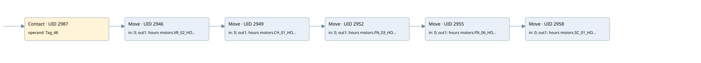

time work motor
time work motor · 검색 색인 순서 50 · 원본 내부 NID 추정 53
백업 PLF 원본의 2904427 바이트 위치에서 복원한 XML. 검색 문서 1051의 객체 키 161022005e12000000000000와 연결했다. 이름 해석 11/11개. 남은 RefId는 상수 또는 미해석 참조다.
연결 구조 다시 그리기
원본 Part/PCon/Wire를 이용한 연결도다. TIA 화면의 래더 배치 또는 실행 결과를 재현한 그림은 아니다. 핀 연결은 아래 표와 원본 XML을 기준으로 읽는다. 노드 위에 마우스를 두면 피연산자 이름을 볼 수 있다.

접점·코일·블록과 피연산자
| Part UID | Gate | Negated 핀 | 연결 피연산자 |
|---|---|---|---|
| 2987 | Contact | operand = Tag_48 | |
| 2946 | Move | in = 0; out1 = hours motors.VR_02_HOUR | |
| 2949 | Move | in = 0; out1 = hours motors.CH_01_HOUR | |
| 2952 | Move | in = 0; out1 = hours motors.FN_03_HOUR | |
| 2955 | Move | in = 0; out1 = hours motors.FN_06_HOUR | |
| 2958 | Move | in = 0; out1 = hours motors.SC_01_HOUR |
접점 경로를 펼친 조건식
Contact·O/A·비교기의 원본 연결을 읽기 쉽게 펼친 보조 해석이다. POWER는 전원 레일 시작을 뜻한다. 호출 블록·에지·타이머의 내부 동작과 다중 쓰기 순서는 이 표로 실행 검증하지 않았다. 미해석 핀과 RefId는 원문 연결표에서 확인한다.
| UID | 동작 | 대상 | 원본 접점 경로 | 내용 |
|---|---|---|---|---|
| 2946 | Move | hours motors.VR_02_HOUR | Tag_48 | Move 입력 0 |
| 2949 | Move | hours motors.CH_01_HOUR | Move UID 2946.eno (블록 동작 확인) | Move 입력 0 |
| 2952 | Move | hours motors.FN_03_HOUR | Move UID 2949.eno (블록 동작 확인) | Move 입력 0 |
| 2955 | Move | hours motors.FN_06_HOUR | Move UID 2952.eno (블록 동작 확인) | Move 입력 0 |
| 2958 | Move | hours motors.SC_01_HOUR | Move UID 2955.eno (블록 동작 확인) | Move 입력 0 |
원본 배선 연결
| Wire UID | 동일 Wire 연결 끝점 |
|---|---|
| 2989 | Powerrail {} ↔ Part 2987.in |
| 2972 | ORef 2961 (Tag_48) ↔ Part 2987.operand |
| 2988 | Part 2987.out ↔ Part 2946.en |
| 2973 | ORef 2962 (0) ↔ Part 2946.in |
| 2975 | Part 2946.eno ↔ Part 2949.en |
| 2974 | Part 2946.out1 ↔ ORef 2963 (hours motors.VR_02_HOUR) |
| 2976 | ORef 2964 (0) ↔ Part 2949.in |
| 2978 | Part 2949.eno ↔ Part 2952.en |
| 2977 | Part 2949.out1 ↔ ORef 2965 (hours motors.CH_01_HOUR) |
| 2979 | ORef 2966 (0) ↔ Part 2952.in |
| 2981 | Part 2952.eno ↔ Part 2955.en |
| 2980 | Part 2952.out1 ↔ ORef 2967 (hours motors.FN_03_HOUR) |
| 2982 | ORef 2968 (0) ↔ Part 2955.in |
| 2984 | Part 2955.eno ↔ Part 2958.en |
| 2983 | Part 2955.out1 ↔ ORef 2969 (hours motors.FN_06_HOUR) |
| 2985 | ORef 2970 (0) ↔ Part 2958.in |
| 2986 | Part 2958.out1 ↔ ORef 2971 (hours motors.SC_01_HOUR) |
식별자 해석 근거 11개
| ORef UID | RefId | 이름 | IdentXmlPart 파일 | 해석 방법 |
|---|---|---|---|---|
| 2961 | 284 | Tag_48 | 0613-IdentXmlPart.xml | UID/RID + search-text + NID agreement |
| 2962 | 12 | 0 | 0616-IdentXmlPart.xml | literal candidate: UID/RID/NID + nearby named declarations + search-text agreement |
| 2963 | 192 | hours motors.VR_02_HOUR | 0615-IdentXmlPart.xml | UID/RID + search-text + NID agreement |
| 2964 | 12 | 0 | 0616-IdentXmlPart.xml | literal candidate: UID/RID/NID + nearby named declarations + search-text agreement |
| 2965 | 198 | hours motors.CH_01_HOUR | 0615-IdentXmlPart.xml | UID/RID + search-text + NID agreement |
| 2966 | 12 | 0 | 0616-IdentXmlPart.xml | literal candidate: UID/RID/NID + nearby named declarations + search-text agreement |
| 2967 | 204 | hours motors.FN_03_HOUR | 0615-IdentXmlPart.xml | UID/RID + search-text + NID agreement |
| 2968 | 12 | 0 | 0616-IdentXmlPart.xml | literal candidate: UID/RID/NID + nearby named declarations + search-text agreement |
| 2969 | 210 | hours motors.FN_06_HOUR | 0615-IdentXmlPart.xml | UID/RID + search-text + NID agreement |
| 2970 | 12 | 0 | 0616-IdentXmlPart.xml | literal candidate: UID/RID/NID + nearby named declarations + search-text agreement |
| 2971 | 216 | hours motors.SC_01_HOUR | 0615-IdentXmlPart.xml | UID/RID + search-text + NID agreement |
검색 코드 보조 자료
참조 명칭을 찾기 위한 자료이며 실행 순서나 AND/OR 관계는 위 연결표로 확인한다.
"tag_48" move 0 move 0 move 0 move 0 move 0 "hours motors".vr_02_hour "hours motors".ch_01_hour "hours motors".fn_03_hour "hours motors".fn_06_hour "hours motors".sc_01_hour